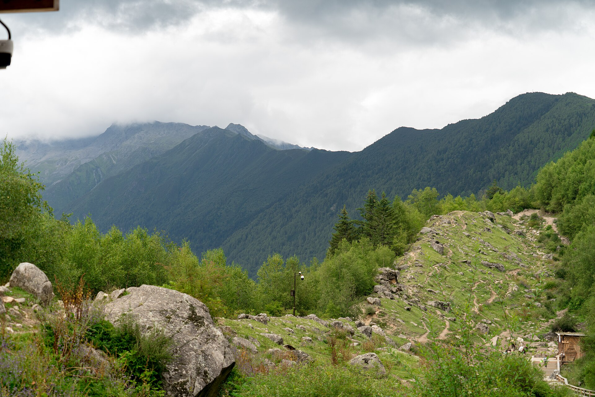
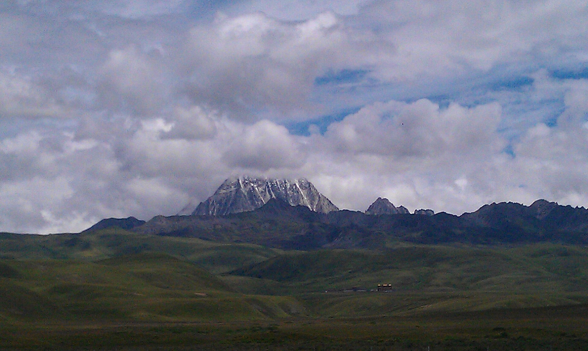
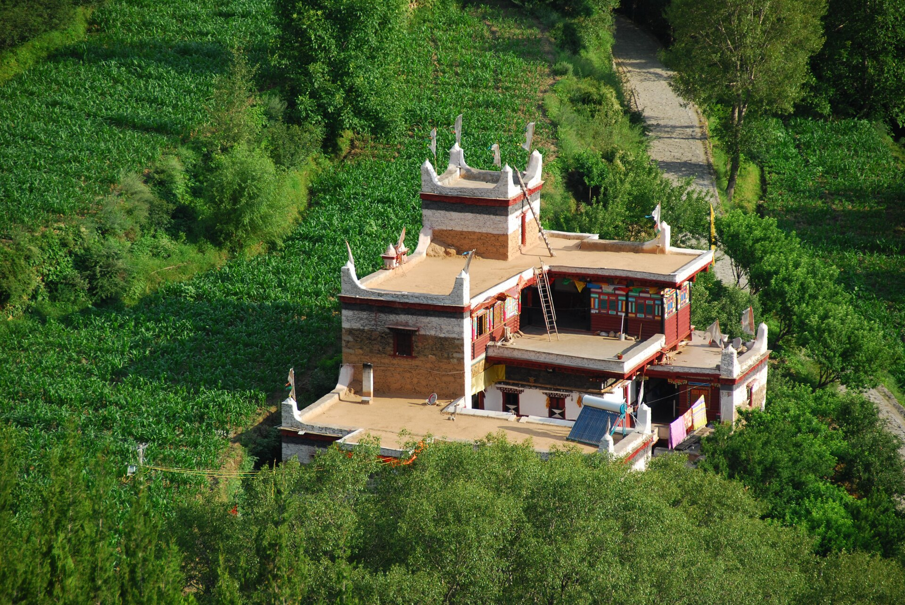

红海子 / 机场路正规停车区
只在能见度好、路面干燥时停车；浓雾、结冰或临时管制时直接通过。
奖励窗口，不等待
先说明日期：9 月 30 日入住、10 月 7 日返程，实际是 8 个日历日、7 晚住宿。本站按日期优先排程；“7 天 6 夜”视为 10 月 1 日至 7 日的主行程。
默认推荐传统逆时针：四姑娘山、丹巴藏寨、墨石公园、塔公草原、新都桥、康定和雅安依次串联。更担心高反可以选择顺时针，愿意承担返航压力再选择雪山加量版。
ROUTE / 01
主线全部选择铺装国省道，不安排冷噶措、鱼子西空中花园等非铺装支线。雪山机位只使用景区、国道观景区和正规停车点。
位置为路线理解示意，不按精确比例。编号表示行驶顺序；实际道路以高德导航、交警通告和当天管制为准。
PLAN OPTIONS / 01B
点击路线后，下方每日路书、道路表和住宿清单会一起切换。默认是传统逆时针均衡线，不需要把所有时间都交给雪山。
ITINERARY / 02
点击日期切换详细路书。驾驶时间已按普通日导航结果加了休息余量，但国庆当天仍可能额外增加 2–4 小时。
SNOW WINDOWS / 02A
10 月初参考日出约 07:10、日落约 19:00，实际以出发前一周的当地天气应用为准。日照金山只在晴朗且西侧低云较少时出现。
只在能见度好、路面干燥时停车；浓雾、结冰或临时管制时直接通过。
奖励窗口，不等待三个位置按所选路线和停车条件择一，不需要为了同一座山重复进入多个收费点。
核心窗口前一晚确认可见方向。若云层厚且没有变化，等待 20–30 分钟后离开。
天气决定顺路且停车稳定时短停；停车已满、山体被云遮或到达太晚时直接回酒店。
完整四峰轮廓乘观光车到高处后逐站向下，一天内完成近距离雪峰、公路和倒影三类画面。
所有路线共同核心天气预报只决定是否等待，不决定是否冒险上支线。
不为了“再等十分钟”破坏后面的白天车程。
墨石公园阴天也能看，晴天时间必须先留给山。
ROAD DETAILS / 02B
距离为路线规划参考，国庆不以导航显示的到达时间为承诺。厕所、加油和司机轮换尽量放在县城、服务区及正规停车区。
| 日期 / 路段 | 参考距离 | 道路与海拔 | 建议停靠 | 主要风险 | 处置规则 |
|---|
STAY GUIDE / 02C
五人默认订 2 间房：一间双床、一间家庭房或三人间。订不到合适三人间时改成 3 间房，并在预算器中增加约 ¥4,000–7,000。
SCENERY / 03
四个停留点分别负责城市河谷、草原雪山、嘉绒藏寨和冰川山谷，避免一路只追同一种“公路大片”。



SPOT ATLAS / 03B
“顺路”不等于“必须去”。筛选后可以看到每个点需要多少时间、费用、海拔和触发条件，晴天优先执行核心观山窗口。
BUDGET / 04
滑动修改机票、住宿和餐饮标准。默认按 2 间房、7 晚、7 座车国庆价估算，所有价格均非实时报价。
ESTIMATED TOTAL
约 ¥0 / 人
建议再留 ¥3,000–5,000 团队机动金，不计入上方总额。酒店尽量订可取消，景区房价在国庆会明显浮动。
CAR / 05
RECOMMENDED
五位成年人使用第三排后，硬壳箱空间会非常紧。建议每人 1 个 20 寸箱或软包，摄影器材统一装一个公共箱。全程主线是铺装路，四驱不是刚需，轮胎、刹车和保险比“越野外观”重要。
BOOKING / 06
当前规划日期为 2026 年 8 月 17 日，国庆核心资源已进入紧张窗口。先锁可退，再慢慢比较。
传统逆时针建议双流 17:00 后或天府 18:30 后航班；雪山加量版必须双流 20:00 后或天府 21:30 后。租车选择与抵达机场一致的门店。
传统逆时针计划 10.2 入园，顺时针和雪山加量版计划 10.5 入园。双桥沟已核验为门票 ¥80 + 观光车 ¥70/人，国庆开放与预约时间以 9 月底公告为准。
重点看雅康高速、G318 泸定—康定、S434 康定—塔公、G248 新都桥—八美、G350 丹巴—小金。
高德离线包覆盖四川；把酒店、景区、加油站和备用医院收藏到同一地图清单，截图保存订单二维码。
TEAM OPS / 06B
出发前分工，避免司机一边开车一边找酒店、看路况、接电话。角色可以兼任，但每项必须有明确负责人。
负责复杂山路与清晨路段；前一晚不饮酒，连续驾驶不超过 2 小时。
接管高速和疲劳时段；同样登记租车驾驶人，不能临时换未登记司机。
只负责导航、路况、停车区和加油点，不让驾驶员操作手机。
管理团队公款、油费、停车票和押金，隔天在群内公布一次余额。
每天早晚询问头痛、恶心、睡眠和血氧趋势，必要时提出停止上升。
FALLBACK MATRIX / 06C
临场最危险的不是坏天气，而是所有人都舍不得删景点。以下规则出发前先达成一致，触发后直接执行。
| 触发情况 | 立即动作 | 删减内容 | 新的住宿 / 路线 | 恢复条件 |
|---|---|---|---|---|
| 10.1 雅康严重拥堵预计 20:00 后才能到康定 | 16:00 前重新评估 | 取消康定散步和次日红海子首停 | 能到泸定则住泸定；不要夜翻山 | 次日路况正常后再进康定 |
| 多人出现明显高反头痛、恶心或失眠持续加重 | 停止继续上升 | 取消新都桥、墨石和高海拔观景点 | 下撤康定或丹巴，必要时就医 | 症状充分缓解且专业意见允许 |
| S434 雨雪 / 结冰 / 浓雾交警分流或能见度明显下降 | 服从管制，切换主路 | 取消红海子、机场路所有停车 | 按导航走 G318 或留宿康定 | 官方解除管制且白天能见度良好 |
| D3 比计划晚 2 小时14:00 仍未离开八美 | 直接前往丹巴 | 取消墨石公园或塔公重复停留 | 保持丹巴县城住宿不变 | 不恢复，当天留出天黑前余量 |
| 双桥沟门票未抢到官方渠道确认售罄 | 不购买黄牛票 | 取消对应景区日 | 沃日官寨、小金或猫鼻梁低强度替换 | 有官方退票余量再恢复 |
| 传统逆时针首日多人高反到卧龙后症状持续加重 | 停止继续升高 | 取消当晚四姑娘山住宿 | 留宿卧龙，次日重新评估 | 症状充分缓解且道路正常 |
| 传统线 10.6 进度落后16:00 仍未离开康定 | 取消泸定桥和雅安目标 | 不再增加任何景点 | 当晚住泸定，10.7 更早出发 | 不恢复，当天避免夜间疲劳驾驶 |
| 雪山加量版道路转差降雪、管制或次日预计到双流超过 8 小时 | 10.6 取消长坪沟并下撤 | 取消四姑娘山第 3 晚 | 当晚住都江堰，次日直达机场 | 不恢复，航班安全优先 |
SAFETY / 07
这不是医疗建议。任何明显或持续加重的不适，都以停止上升、尽快下撤和寻求专业帮助为优先。
首两天慢走、少说话、不饮酒。头痛、恶心、失眠持续加重时停止行程；呼吸困难、意识异常、步态不稳时立即下撤并拨打 120。
不要用吸氧掩盖严重症状继续上山国庆高海拔清晨可能低于 0°C。车辆准备合规防滑链，驾驶员提前学会安装；遇降雪、浓雾或暗冰，取消 S434 沿途停靠。
保暖层 + 防水层 + 帽子手套每天 06:00 前后出发，油量低于半箱就补。山区不要因堵车抄村道；官方分流、交警指挥优先于任何攻略和旧导航。
路线切换不能替代当天路况判断双桥沟乘车到最高点后自上而下游览，减少无效爬升。出现不适可跳过站点，直接乘观光车回入口。
景色不会因为少走一站而消失CHECKLIST / 08
勾选状态会保存在当前浏览器。公共物资只带一份，避免五个人各自塞一套药品和充电设备。
SOURCES / 09
每个景点卡片都提供小红书精确检索入口，关键词已细化到停车、机位、排队或徒步。小红书 Web 登录态可能失效，因此页面不伪造具体作者和笔记标题；游客经验只用于判断拥堵、机位和取舍，不作为票价、管制或开放状态依据。
资料核验时间：2026-08-17。2026 年国庆专项通告尚未发布，页面已把需要 9 月底复核的内容单独列出。